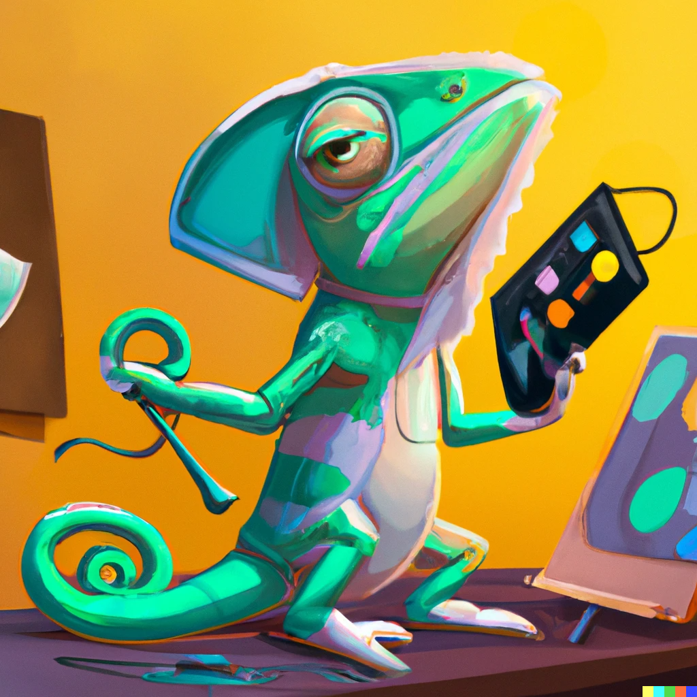

Wrang

Wrang is a writing language
Writing static sites in plain html is unarguably a
Herculean task
.
Most people would use
markdown or
asciidoc or
restructured text or something of the sort to make their lives easier and so did I, until I wrote my own tool
sitefl
. But when I wrote sitefl, I wasn't really paying much attention to code quality ... or literally pretty much anything other than results. And for a while, it did work. I mean, it still works technically, its just that I felt like I could've done better.
Wrang is my attempt at making sitefl better. It is written in C, but the reason isn't anything related to performance or anything, its just that I'm more comfortable in C now than I am in Go. It surely does help that the resulting binary is smaller, but that's just a bonus.
Wrang tries to be compatible with sitefl, but due to my organizational skills (or the lack thereof) I've based it on a version of sitefl that may not be the one you see on github. I suppose though that the (only?) change is probably in the way headings are written,
#3 vs the old markdown style
###.
The mascot image was generated using
OpenAI's DALL-E
Get the wrang syntax
here
.
Wrang on github